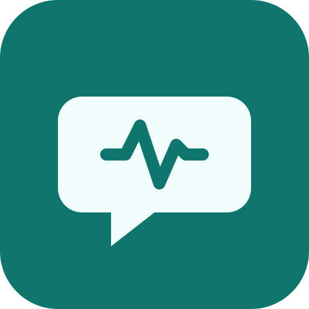

L’inglese per i colloqui tecnici degli ingegneri.
Non un altro corso generico: TechTalk Coach allena l’inglese parlato e ascoltato che serve davvero a un ingegnere, con il tuo vocabolario di laboratorio, firmware e debug. Trenta minuti al giorno, dal telefono, anche offline.
Prova l’appCosa alleni
🔁 Verbi irregolari«The board ran for 48 hours»: un gruppo alla volta, con il ripasso distanziato.
🔢 Numeri e misure13 o 30? 47 kΩ, 0x4000, ±5%: al primo ascolto.
🔤 SpellingPart number, sigle ed email dettati lettera per lettera.
🧰 Vocabolario tecnicoOscilloscope, jitter, root cause analysis, pronunciati bene.
🎤 Simulazione di colloquioDomande vere, risposte a voce, trascrizione e autovalutazione.
🤖 Tutor AIUn selezionatore che ti fa domande e ti corregge con gentilezza.
Per chi è
Ingegneri e tecnici con un inglese scritto buono ma un parlato «arrugginito», che si preparano a un colloquio o lavorano in team internazionali. Pacchetti di settore: semiconduttori e microcontrollori, embedded e IoT; altri in arrivo.
Lista d’attesa per la beta
Stiamo cercando 10–20 ingegneri per provare l’app e dirci cosa migliorare.
Le iscrizioni apriranno a breve. Intanto puoi già provare l’app.